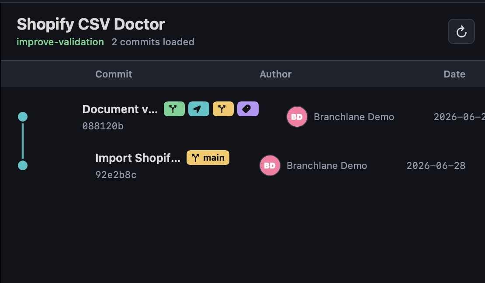
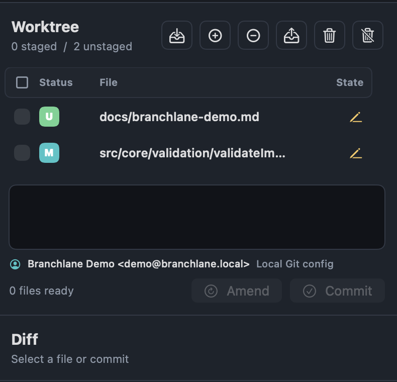

Commit history that stays readable
Browse commits, refs, authors, dates, local branches, remote branches, tags, and stashes in one focused view.
Private Git Client For Mac
Branchlane is a focused macOS Git client for local repositories, commit history, branches, worktrees, and safer daily Git operations.

Daily Git Workflows
Branchlane keeps repository work on your Mac while giving common Git actions a native interface.
Browse commits, refs, authors, dates, local branches, remote branches, tags, and stashes in one focused view.
Stage, unstage, discard, commit, amend, fetch, pull, push, and manage everyday repository operations.
Confirmation flows help protect destructive actions such as reset, force push, branch deletion, and discard.
Screenshots

App Store Links
Use these URLs in App Store Connect for Branchlane's privacy policy and standard EULA.